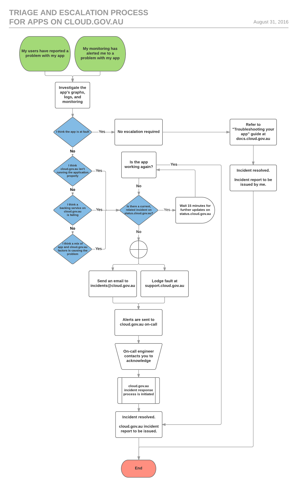

Incident response
Incident Response FAQ
Downtime is not a matter of if, it's a matter of when.
These are common questions we get from teams launching services about what cloud.gov.au provides, what your responsibilities are when launching services, and how we respond when things go wrong.
How do I find out about problems with cloud.gov.au
We publish status and availability for the platform and applications on status.cloud.gov.au.
During incidents, we commit to delivering status updates every 15 minutes.
Triage and escalation process for apps on cloud.gov.au

I have a service on cloud.gov.au.
You're launching a service on cloud.gov.au, and you want to know where the responsibilities are.
What am I responsible for?
- The availability of my service.
- The availability of the apps that make up my service.
- Making changes to my service.
- Security and classification of the data stored by my service.
- Sending emails for my service.
- For example, emails for user sign ups, password resets, notifications, etc.
What am I not responsible for?
- The availability and uptime of the hosting that my service depends on.
- The availability and uptime of the hosting that the apps that make up my service depends on.
- For example, if you cannot diagnose the interruption to your service within the applications that make up your service, contact cloud.gov.au
What is the cloud.gov.au team responsible for?
- Providing a platform to run services on.
- Providing tools to make changes to those services faster, standard, and safer.
- Ensuring the availability and uptime of the platform, so applications can successfully serve traffic.
- Any backing services provided by the platform that applications depend on (like databases, caching, etc).
- Domain name management, load balancing, and redirection, for any apps or services running on the platform.
What is the cloud.gov.au team not responsible for?
- Applications running on the platform
- The apps that make up the services running on the platform.
I’m having an outage.
Things are going to break. We're here to help you get back on your feet.
What should I escalate to the cloud.gov.au team?
- A suspected failure of the application runtime environment, that is impacting the availability of your app.
- A suspected failure of a backing service used by your app, provided by the cloud.gov.au platform, that is impacting the availability of your app.
What should I not escalate to the cloud.gov.au team?
- Failures in your application that are caused by configuration error, or code change.
- For example, if you apply an update to your service, and the service or a webpage becomes unavailable, you should investigate the root cause in your application layer before asking the cloud.gov.au team.
How do we triage incidents that are a mix of service, app, and cloud.gov.au problems?
- Contact the cloud.gov.au team.
How do I contact the cloud.gov.au team?
- Create a support ticket at support.cloud.gov.au, or
- Send an email to incidents@cloud.gov.au.
- This will post a notification in #cloud-gov-au on Slack.
- This will alert primary on-call for cloud.gov.au, who will triage the incident.
How do we run incident management?
- Join the #incidents channel on Slack.
- We will appoint an Incident Response Commander to run the incident.
- The topic of the #incidents channel will be updated.
- We will provide 15-minutely updates on status.cloud.gov.au.
- We will hold and publish a Post Incident Review
Please refrain from posting in this channel unless you are directly working on the incident.
Edit this page on GitHub